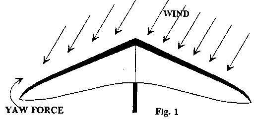
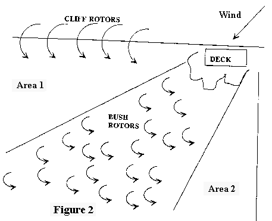

by Kent Harker
We in the San Francisco Bay Area have a rare privilege. We have the most consistent flying site in the entire country at Fort Funston, just inside the city and county of San Francisco on the coast. "The Fort," as it is affectionately known to its hard-core devotees, offers no cost privileges for intermediate and advanced pilots. If you enjoy flying in large doses, the Fort is where it happens. You can drive one hour and fly for six, instead of the reverse, as when you go to a mountain site. You can sleep in your bed at home and you don't need a driver for retrieval. And hey, the roads are all paved. Most important, on a typical day you don't need to worry about lift.
So why don't more of the new Hang III's come out to Funston? This primer may help prepare you to make the most of the Funston Experience and place you ahead of those who won't come out.
The intermediate rating is really the springboard to learning how to fly. With a III, you have the basic skills of launching, turning and landing the glider, and that's about it. Those who believe they know how to fly after ten hours air time do not have the proper attitude to come to the Fort. Funston is a school where you may learn about and practice from basic to the most advanced techniques. Whenever you hear someone tell you that Funston is "boring, " and that you can only "fly back and forth" you may rest assured that he or she is either frightened about flying there or hasn't a clue what coastal flying can bring. You may be assured that those who say you can only "fly back and forth" are talking about themselves.
To prepare for your Funston adventure, you should have a rigorous understanding of airspeed. Wind moving from the ocean has comparatively little drag over the water. When it hits the cliff, it tumbles in vigorous rotors that spread out over the LZ. The friction with the earth produces a mother of gradients for the air that isn't tumbling in rotors. The typical introductory flight for the unaware pilot when landing time comes is often a broken down tube and a damaged ego. If that happens, he doesn't know how, but doesn't want to repeat the experience. We never see him again. We cannot over-emphasize: you must have a proper understanding of airspeed as it relates to gradient and rotors. The three elements of flying: launch, soaring, and landing, are unique at the Fort. We will discuss each.
The launch is at a cliff, so techniques are different from your experience with slope launching. For first timers, we advise wind speeds around 15-18 mph and not more than 15 degrees cross. Conditions outside this window require advanced skills and will be covered separately. (Below 15 mph requires scratching close to the cliff and high skills to be able to squeak the glider in for a top landing. Above 18 mph increases the strength of the rotors for unpleasant landing surprises. Very cross winds involve even more specialized launch skills.)
OK. You're at the cliff and conditions are good for your first visit. First priority: go out and look at the beach. You may have to land there. How many people are spread out down there enjoying the sun and surf? Where is the tide? Where do you have access to bring your glider back up? What time is high tide? What part of the beach is wind shadowed? Make sure you have a clear understanding of the beach landing before you ever launch. You may have to go to the beach any time during your flight for three reasons: 1) The lift may quickly dissipate and you can't make it back in time to top land; 2) You just decide you are not comfortable with making the top landing; 3) Conditions quickly become stronger, making the top landing hazardous. If beach access is reasonably clear, landing there is always the safest, easiest low-stress, no-rotor option provided you have had a thorough explanation of what to expect.
The Launch
A windy cliff launch has its hazards. Remember the cliff rotor, and take a few moments to walk around the launch with an experienced pilot to feel where the backside of the rotor is. Watch how launching pilots ground handle their wings to get out to launch. You don't need unexpected ground problems to have increased your stress by the time you are finally in the laminar air near your launch point. How far back from the cliff you choose to begin your launch depends upon the wind velocity. When you pick up your glider, concentrate on having it balanced - not level. You should learn to begin your launch immediately when your wing is balanced: holding the glider longer allows slight buffeting to put you out of balance, and you will become fatigued ane more stressed. You begin your move toward the cliff. No matter what you see or have heard, an aggressive, vigorous run is the call.
The Flying
As the glider flys away from launch the typical response is to keep flying straight out. Soaring doesn't begin until the glider is in the lift band. For the desired wind velocity, the lift band extends only about 30 yards out, so you can quickly fly out of it and sink out. This usually prompts mild panic and a beach landing. It may be uncomfortable at first turning so close to terrain, but you must. Be mentally prepared to initiate your turn seconds after launch.
Now that you're in the band, you feel that sweet lift. You should proceed to the top of the lift, where you will remain until you are ready to land. The first order of business now is flying ridge-soaring rules and awareness. You are in a confined arena, a rectangular box, filled with any number of gliders. If you don't learn to carefully clear your turns and observe ridge-soaring rules, it could be disastrous. For the first day, your only task is to fly at the top of the band, back-and-forth fashion - the way some pilots say is the only thing to do there. You use the time to learn to turn and fly in high-volume traffic, keeping your awareness of every glider in the air. Practice looking at every pilot - not just his or her glider. When senior pilots see you looking, even staring, at them, they will be impressed. Plan on spending your first five to ten logged hours only on the back-and-forth stuff. Just don't get stuck there, for there is more, much more to come. There is another element to practice at the Fort: continually checking the wind sock and the ocean for changes. Be prepared to come right in if it happens.
After several passes, you will begin to relax and enjoy the pleasure of rather carefree flying in continuous lift. Enjoy it. But be continuously aware.
Landing Time
You should have taken some time to walk around the LZ with an experienced pilot. He or she will show you the safer - and the more hazardous - places to land. The safer places will be well back. Landing closer to the setup area is definitely more convenient, but convenience will not compensate for a broken down tube or worse. The safety of a longer walk is well worth it.
When you decide to land, first make a pass to carefully check the wind sock. Learning about a change when you are at 25 feet on final can be a very unhappy experience.
Once you have determined your spot based upon wind-sock information, how you set up your approach will be a function of your skill and experience. A thorough discussion on the ground with your instructor or a senior pilot is invaluable. Your approach altitude and speed will depend mostly upon conditions. If you have wisely chosen a mild day, ground conditions will be manageable. Only landing experience in large doses will bring the competence and confidence you need to fly successfully at Funston.
Now that you have completed your basic training - launch, ridge soaring, awareness and landing for about 20 hours - you are ready to begin your education. Unhappily, most pilots who come out get stuck at the basics: launch, fly to the top of the band back and forth and land, all when conditions do not exceed 18 mph straight in. That's the kindergarten stuff. You can get a Ph.D. at the Fort.
The School Book Is Open
Your next step should be to really learn how to turn a glider. You will spend the next five logged hours doing nothing but turns. You will learn how difficult it is to do a perfectly coordinated turn in a precise 10 degree bank. You will find how satisfying it is to execute a perfectly coordinated turn in which your bank angle does not change more than a couple of degrees throughout the turn. You will learn how efficient it is to make a perfect turn. You will learn that in five logged hours you have only begun to understand what a hang glider turn is. You will be excited to learn more.
From here, you may choose any number of paths to pursue. There is practically no limit to what you can do. For those who believe there is only "back and forth," here are a few of the exercises:
- Practice launches - as many as 35 in one day.
- Practice landings (you hope the same number as the launches).
- Practice high-speed flying - with no PIO.
- Practice scratching in the marginal lift.
- Practice flying very close to terrain.
- Learn how to turn with pitch-only input.
- Learn how to highside a turn.
- Learn where to anticipate wake turbulence and how to avoid it.
- Practice precision turn coordination.
- Practice crosswind approaches and landings.
- Practice precision landings in difficult conditions.
- Learn and practice steep glider attitudes.
- Learn to fly comfortably close to another glider.
- Spend six hours working on a single skill.
- Learn crosswind, high-wind launches.
Advanced Conditions
If you want to increase your access time at the Fort, you must decide if you want to fly in stronger conditions. Over half the flying is outside the comfort window for new pilots. If you do not want to push your margin, make the decision before coming out. Otherwise you might be tempted or prodded to put yourself into something you could regret. Determine your safety and comfort margin and make that your standard.
By the same token, learning is about constantly pushing at the window frame. You can do this safely if you do it gradually, thoughtfully, and patiently. At what other sites do you have the luxury of gradually taking on stronger conditions? Part of the assessment for your preparation in challenging stronger conditions is the type and condition of your glider. Penetration and handling in higher winds demand high performance gliders. Check someone who knows your glider to give you a clear understanding of its performance characteristics.
When wind speed increases at the Fort, it will be from the NW 90% of the time. As the wind becomes more cross, the lift component decreases. For example, wind arriving at 45 degrees to the cliff produces about 68% of the lift as the same straight-in wind. This means that it takes a little more than 26 mph for that crosswind to produce the same lift as an 18 mph straight-in wind. Also, the lift band is narrower as the wind becomes more cross.
Most blown launches at the Fort happen in NW conditions. In nearly every case it is because the pilot tries to launch wings-level, pointed straight out. This is strange because the average pilot, when he goes to the mountains will not launch if it is cross because he can't hold the glider level and pointing down the fall line. Because the pilot isn't looking down a slope when he is at Funston, he thinks the rules of aerodynamics somehow don't apply. The glider doesn't care a whit what the terrain looks like. It only recognizes one element: relative airflow. If you look at the launch as if you were the glider, it will help you overcome the mistakes of trying to make the glider do what it is not designed to do.
Before we continue, let's define relative airflow. Air flowing over the glider when it is on the ground is absolute airflow. Whenever the glider is in motion, air moves over the wing, and the glider "sees" it the same as if there were a wind blowing. Thus, the relative flow is the combined effect of the actual wind and the flow caused by the movement of the glider. For example, suppose there is a 5 mph wind directly from your right and you are running with the glider straight ahead at 5 mph. The combined effect of the "wind" produced from your running and the actual wind 90 degrees on your right is equivalent to a wind from 45 degrees on your right at about 6 mph. The importance of relative airflow is that your glider will always produce forces to keep the keel line pointed into the relative airflow. There are only two circumstances when relative and absolute airflow are the same: when the glider is perfectly parallel to the wind or when there is zero wind, rare conditions indeed. You see why hang glider training is best in no-wind or light, straight-in wind conditions. Since 99.8% of normal flying is outside those rarre conditions, pilots who do not understand relative airflow will make bad mistakes.
Now we seek to understand how relative airflow makes the glider react according to specific design features. If the glider is angled to the wind, sweep induces forces that will yaw the keel into the relative wind: the upwind wing sees more wind than the downwind wing. This produces drag, which imparts a yawing force on the glider (see Fig. 1), restoring it into the relative airflow.

This restoring force is strong - you may, with difficulty, be able to counter it with your feet on the ground and the counter-twisting force you are able to apply to the down tubes. But as soon as you begin to move, your feet have less friction with the ground, and you will be increasingly unable to counter the yawing force of the drag. The glider will yaw into the relative wind. That yaw movement now presents another problem. In the case of the NW wind, the glider will yaw to the right. The left wing is now moving faster than the right. The faster wing produces more lift, which induces a right bank. Yet another unwelcome component adds misery to this deteriorating state of affairs: the left wing is closer to or over the cliff edge, encountering lift, which further banks the glider and accelerates the turn. The glider is in total control now; the pilot is merely an unhappy rider. Broken keels, leading edges and down tubes are the usual casualties. Except for his ego, the pilot is rarely seriously injured. (Note: The only time relative wind applies is when the glider is not airborn or when it encounters shear or gradient wind conditions.)
There is another way to counter and control the natural forces generated on the glider for those who insist on going off wings-level: get wire "help." If you have three people, one on the nose and one on each wing, they can control the glider because they have their feet on the ground and they are out far enough from the CG to have sufficient leverage to muscle the forces. This "solution" to the problem is wrong on at least four counts. 1) The pilot is no longer in control of the glider: his wiremen are. It is really they who perform the launch, running with the glider and literally throwing it off the cliff. 2) The wiremen are forcing the glider against what it is designed to do. 3) The pilot is unaware of what forces are upon his glider. 4) Each time the pilot uses this incorrect procedure, it reinforces his belief that the "method" is in fact correct and that one cannot be safe without wire assistance.
Why not look at the aerodynamics and design of the glider and let it do what it was engineered to do? If you let the glider fly, you don't have to struggle to counter aerodynamic forces. Take the glider out to launch and let it "find" its own keel line in the relative air flow. When the yaw is correct, you will note that the left wing is closer to lift, so it wants to roll. Balance that, too, with a slight left bank. The function of wire help in this case is merely to help you get the glider balanced.
Now, as you stand there, you note that there is no struggle! All forces on the glider are balanced, and you are not using muscle and sinew to try to counter natural forces. You may now hold the glider lightly, so that as you begin your run the glider will yaw and roll naturally to change in relative air-flow caused by the glider movement.
Before you begin your run, look at the wing. The horizon is no longer your reference. That horizon stuff is for those who will forever be stuck in a wings-level mindset. You are now free to experience a new dimension in your flying experience and skills. By opening the window of your flying abilities, you have opened many more available days to your flying time. Done correctly, a strong NW wind launch is as easy as a moderate, straight-in one. The glider does not know the wind is crossed; only the pilot knows it. Learn to think as if you are the glider.
The bonus to learning crosswind technique is that it is valid everywhere. When others are kicking dust in frustration at a strong crosswind at launch, you can go out unassisted and roar into the sky.
Landing at the Fort in strong crosswinds is another matter altogether. Whereas the launch becomes controllable with knowledge and practice of the proper technique, the landing is mostly a function of where you land, namely away from the worst part of the rotors. As wind strength increases, the energy of the rotors increases and they last longer. Deeper into the LZ, the gradient is steeper. The NW direction imposes a new wrinkle on the LZ, too. The bush/observation deck rotor fans out conically over the LZ with punishing consequences. In very strong conditions, this rotor can have astonishingly powerful dimensions. It can be risky to even fly over it because you cannot see how high it is. We need not say that flying through it is perilous. If you land in it, it will only be dumb luck if you get out unscathed. It is amazing that pilots repeatedly land in that rotor when they have been warned. Perhaps it is a case of warning a pilot that he should not hit that lone tree in the middle of the LZ, which causes him to fixate on the tree, nailing it.

Figure 2 represents the observation deck and the LZ. The safest landing areas are clear. Area #1 is safe but quite narrow. It is even narrower if the velocity (remember that velocity is speed and direction) changes more north. If you miss it on either side you will be unhappy. Area #2 looks like the safest call. You can have very consistent results there.
When you look at either area you should be able to see the best approach. Most right-handed pilots favor a left approach, which would be good for area #1. Be careful that you don't make an approach based upon the side you favor. For example, a left approach to area #2 flies over the rotor. The right hand approach is better for area #2. This entails flying well off the lift band and over the parking lot and back near the clubhouse. This may be quite uncomfortable at first, but the absence of the bush rotor more than compensates. At the back of the LZ the wind is more north than it is on the cliff. You will find that you may almost put the keel parallel to the cliff on your final.
Apart from the rotors, the key to a safe, successful landing is understanding airspeed. On strong days wind speeds are over 25 mph at fifty feet. On the ground it may be as little as 5 mph. This means you have to literally dive the glider at the ground and be ready for a flare. This means that when you feel sudden sink, as if someone cut the cable on an elevator, you must override the impulse that makes you want to push out to stop your descent. In fact, you have to pull in and increase your descent rate. Keep the glider flying, and airspeed is the only way.
You are accustomed to skimming over the ground to your spot when you land. This works fine in smooth, consistent air. If there is a nice rotor between your ground skim and the intended spot, your plan will be in the toilet when the glider meets the rotor. Suddenly all your airspeed is gone in the rotor and you are hanging from sixty-some pounds of dead weight. A 911 whack is in order for the unprepared. At the coast, we are ready for the flare at any time in our ground skim. The nose of the glider belongs heavenward when the glider quits flying. Master pilot "Marginal" Mark gives the best overall advice: "Just fly the glider." If you are flying the glider - not the spot - it will tell you when it is stalled. If you are diligently listening to it, you will be ready to do your part when it quits flying, i.e., flare. Watch the experienced pilots who consistently make clean landings and learn from them.
Many pilots believe that there can be nothing at the coast that can help them in their thermal flying. Consider. If you have mastered a precise, perfectly coordinated low-bank-angle turn, could that help you in a light thermal? If you have mastered the skill of high-siding to produce a very flat turn, could that help you core up in a weak thermal? If you have mastered launches in winds up to 30 mph and 45 degrees cross, could you more comfortably manage a 20 mph wind that is 30 degrees cross at your favorite mountain site? Could you better handle landing in a field behind some rotor-producing trees and bushes when you got flushed after the wind picked up another 15 mph while you were at altitude?
Such real-life conditions happen all the time at mountain sites. You never know when conditions may increase while you are flying. You may decide you will never fly in conditions above 20 mph, but the day you launch when it is 10 and they build to 30 while you are in the air is the day you may wish to high heaven you had the experience in stronger conditions.
The bottom line is that your Funston schooling may be the best preparation available to put you at the top of the pack in every respect, especially in safety and proficiency. If you have higher skills in a wide window of conditions, the amount, quality and safety of your flying experience will be multiplied many times.
Simply put, the Fort Funston experience will make your flying safer and more fun.